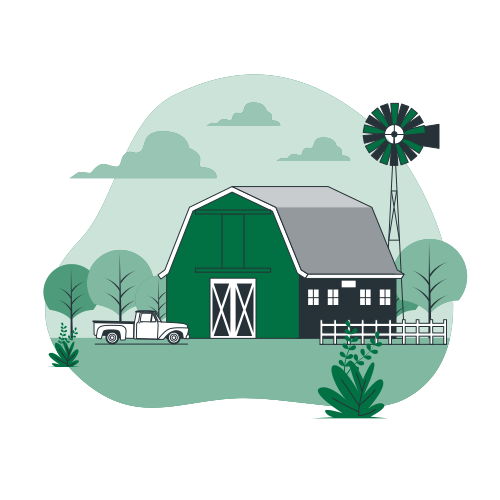

Entenda como ocorre o desperdício:

O desperdício na agricultura ocorre devido a vários fatores, como perdas na colheita, armazenamento inadequado, falta de infraestrutura e demanda insuficiente, resultando em descarte de alimentos perfeitamente comestíveis.
Durante o transporte até o mercado, ocorre um significativo desperdício de alimentos. Fatores como manuseio inadequado, falta de refrigeração adequada e longas distâncias podem levar à perda de produtos perecíveis.
A implementação de práticas logísticas eficientes e a adoção de tecnologias, como a Internet das Coisas, podem ajudar a reduzir as perdas e garantir que os alimentos cheguem em bom estado ao mercado.